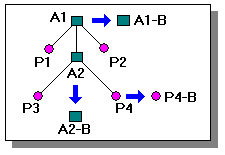
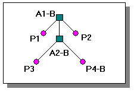

Revising assemblies
When you want to make design changes to a project, you can start by creating a partial or complete copy of the project's documentation. After copying the documents, you can begin changing the project's parts and assemblies.
You can use Design Manager to manage assembly revisions. It allows you create new document revisions while maintaining the previous links in the documents. Design Manager displays a hierarchy of the related documents and contains tools you can use to create new revisions of the documents while maintaining the links.
Copying documents for revision
When you build assemblies in Solid Edge, the set of parts and subassemblies that make up the assembly project can be easily copied as a group, using new names and locations if required.
With Design Manager, you can copy Solid Edge documents. First, activate Design Manager and select the document you want to copy. Then, use the Revise command to copy the document or document group.
If a document has an associative relationship to another document, a parent/child relationship between the documents exists. If you try to copy only the child document, you will be warned that the parent document must also be copied.
When you select a part for revision, all the occurrences of the selected part, the assembly in which the part is a component, and all subassemblies of that assembly are selected. You can clear any component you do not want to revise.
Working with the new document set
You can use Design Manager to create new documents. The new documents must have different names if you are going to store them in the same folder or folder as the original documents. They can have the same names as the original documents if you are going to store them elsewhere.
You may need to update the links in any documents with new names so the parts and subassemblies are recognized by their new names.
Assembly revision example
In the example below, the following has occurred during the revision process:
-
A1 is the assembly document that is being revised because part P4 of subassembly A2 has been modified.
-
Part P4 is saved to P4-B.
-
Assemblies A1 and A2 were saved as A1-B and A2-B.
-
Assembly A1-B's link has been updated to point to A2-B instead of A2.
-
Assembly A2-B's link has been updated to point to part P4-B instead of P4.

|
Legend |
|
|---|---|
|
Assemblies |
|
|
Parts |
|
The new assembly document A1-B has links both to the revised parts and to the unrevised parts as shown below.
